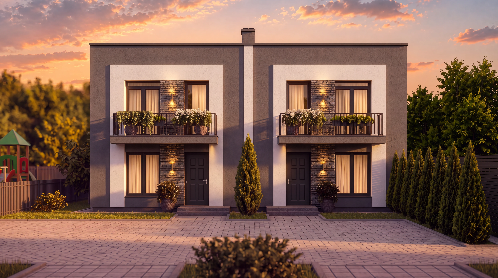

Головний матеріалЧому таунхаус — компроміс між квартирою та власним будинком?
Порівнюємо приватність, власний двір, щоденні витрати та свободу, яку дає камерний формат житла.
(01) · SHEPIT JOURNAL
Не рекламні формулювання, а практичні відповіді: як обрати формат житла, оцінити локацію, зрозуміти умови придбання і спостерігати за розвитком проєкту.
Читати матеріали(02) · Матеріали
Три теми, з яких зазвичай починається усвідомлений вибір: формат дому, щоденне оточення і фінансові умови.
(03) · SHEPIT ON SITE
Фіксуємо ключові етапи робіт і показуємо, як майбутній образ SHEPIT HOUSE перетворюється на реальний простір.
 Актуальний випуск03 / 03
Липень 2026 · Хід будівництваТретій етап.
Актуальний випуск03 / 03
Липень 2026 · Хід будівництваТретій етап.(04) · Спільнота
Обирайте зручний формат: короткі новини у Telegram, відеощоденник на YouTube або візуальні оновлення в Instagram.